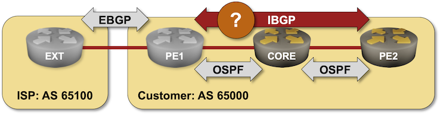
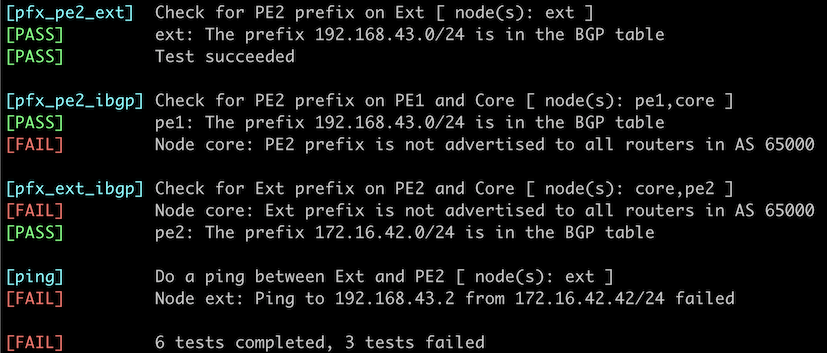

Build a Transit Network with IBGP
In the Establish an IBGP Session Between WAN Edge Routers lab exercise, you built a simple network with two adjacent BGP routers. In this exercise, you’ll explore the impact of adding a core router between edge routers running BGP.

After starting the lab, you’ll have to configure all the IBGP sessions needed to establish connectivity between the prefixes advertised by the PE2 and EXT routers. You MUST NOT use route redistribution between OSPF and BGP to solve the connectivity issues (there’s an excellent reason for that restriction).
Existing Lab Configuration
When starting the lab with netlab, you’ll get a preconfigured lab:
- All routers will have their interfaces and IP addresses configured
- OSPF will be running between PE1, PE2, and CORE routers.
- BGP will be configured on PE1, PE2 and EXT routers. PE2 and EXT will advertise their assigned IP prefixes in BGP.
- There will be an EBGP session between PE1 and EXT routers.
Warning
The lab topology uses an unnumbered IPv4 link between PE2 and CORE routers. If your devices don’t support unnumbered IPv4 links or cannot run OSPF over unnumbered IPv4 links that link will be changed to a regular IPv4 subnet, resulting in a slight change in IP routing tables and printouts.
The following tables summarize the existing lab configuration.
BGP Configuration
The routers in your lab use the following BGP AS numbers. The external router advertises an IPv4 prefix; your PE routers advertise their loopback IPv4 addresses.
| Node/ASN | Router ID | Advertised prefixes |
|---|---|---|
| AS65000 | ||
| pe1 | 10.0.0.2 | |
| pe2 | 10.0.0.3 | 192.168.43.0/24 |
| AS65100 | ||
| ext | 10.0.0.10 | 172.16.42.0/24 |
netlab also configures the EBGP session between PE1 and EXT routers.
| Node | Neighbor | Neighbor AS | Neighbor IPv4 |
|---|---|---|---|
| ext | pe1 | 65000 | 10.1.0.6 |
| pe1 | ext | 65100 | 10.1.0.5 |
OSPF Configuration
OSPF backbone area is configured on the following routers in AS 65000:
| Router | Interface | IPv4 Address | Neighbor(s) |
|---|---|---|---|
| core | Loopback | 10.0.0.1/32 | |
| Ethernet1 | 10.1.0.1/30 | pe1 | |
| Ethernet3 | True | pe2 | |
| pe1 | Loopback | 10.0.0.2/32 | |
| swp1 | 10.1.0.2/30 | core | |
| pe2 | Loopback | 10.0.0.3/32 | |
| Ethernet3 | True | core |
Start the Lab
Assuming you already set up your lab infrastructure:
- Change directory to
ibgp/2-transit - Execute netlab up (device requirements, other options)
- Log into your devices (R1, R2) with netlab connect and verify that netlab correctly configured their IP addresses, OSPF routing, and EBGP sessions.
Warning
- This lab requires netlab release 1.7.0 or higher.
- If you’re not using netlab, you must configure CORE and PE2 routers yourself. Configurations for PE1 and EXT routers are in the
configsubdirectory.
Propagate External BGP Routes to PE2
Try to ping the external router (172.16.42.42) from PE2. You have to check the connectivity between the advertised IP prefixes, so you should use a version of the ping command that specifies the source interface or the source IP address. For example, you must use ping 172.16.42.42 source Ethernet2 on Arista EOS and ping 172.16.42.42 -I 192.168.43.2 on FRRouting or Cumulus Linux.
Tip
- The extended ping command is often available only in privileged (enable) CLI mode.
The ping command will most likely fail1. Cumulus Linux or FRRouting immediately gives up:
Pinging Ext from PE2 (FRRouting)
pe2(bash)#ping 172.16.42.42 -I 192.168.43.2
PING 172.16.42.42 (172.16.42.42) from 192.168.43.2: 56 data bytes
ping: sendto: Network unreachable
Arista EOS displays the root cause of the failure – the destination network is not in the IP routing table – but keeps retrying:
Pinging Ext from PE2 (Arista EOS)
pe2#ping 172.16.42.42 source Ethernet2
PING 172.16.42.42 (172.16.42.42) from 192.168.43.2 : 72(100) bytes of data.
ping: sendmsg: Network is unreachable
ping: sendmsg: Network is unreachable
ping: sendmsg: Network is unreachable
ping: sendmsg: Network is unreachable
ping: sendmsg: Network is unreachable
--- 172.16.42.42 ping statistics ---
5 packets transmitted, 0 received, 100% packet loss, time 40ms
A quick look into PE2’s routing- and BGP table confirms that PE2 knows nothing about the IPv4 prefix 172.16.42.0/24.
The routing table on PE2
pe2# show ip route
Codes: K - kernel route, C - connected, L - local, S - static,
R - RIP, O - OSPF, I - IS-IS, B - BGP, E - EIGRP, N - NHRP,
T - Table, v - VNC, V - VNC-Direct, A - Babel, F - PBR,
f - OpenFabric, t - Table-Direct,
> - selected route, * - FIB route, q - queued, r - rejected, b - backup
t - trapped, o - offload failure
O>* 10.0.0.1/32 [110/10] via 10.0.0.1, eth3 onlink, weight 1, 00:01:35
O>* 10.0.0.2/32 [110/20] via 10.0.0.1, eth3 onlink, weight 1, 00:01:35
O 10.0.0.3/32 [110/0] is directly connected, lo, weight 1, 00:02:00
L * 10.0.0.3/32 is directly connected, eth3, 00:02:07
C * 10.0.0.3/32 is directly connected, eth3, 00:02:07
L * 10.0.0.3/32 is directly connected, lo, 00:02:07
C>* 10.0.0.3/32 is directly connected, lo, 00:02:07
O>* 10.1.0.0/30 [110/20] via 10.0.0.1, eth3 onlink, weight 1, 00:01:35
C>* 192.168.43.0/24 is directly connected, eth2, 00:02:07
L>* 192.168.43.2/32 is directly connected, eth2, 00:02:07
BGP table on PE2
pe2# show ip bgp
BGP table version is 1, local router ID is 10.0.0.3, vrf id 0
Default local pref 100, local AS 65000
Status codes: s suppressed, d damped, h history, * valid, > best, = multipath,
i internal, r RIB-failure, S Stale, R Removed
Nexthop codes: @NNN nexthop's vrf id, < announce-nh-self
Origin codes: i - IGP, e - EGP, ? - incomplete
RPKI validation codes: V valid, I invalid, N Not found
Network Next Hop Metric LocPrf Weight Path
*> 192.168.43.0/24 0.0.0.0(pe2) 0 32768 i
Displayed 1 routes and 1 total paths
The lack of BGP routes on PE2 shouldn’t surprise you if you completed the Establish an IBGP Session Between WAN Edge Routers lab exercise – you already know you need an IBGP session between PE1 and PE2.
Configuration task:
- Configure an IBGP session between the loopback interfaces of PE1 and PE22.
Tip
The IBGP session is preconfigured on PE1 and should be established as soon as you configure it on PE2.
Verification:
Check the BGP neighbors and the BGP table on PE2. You should see an established IBGP session between PE1 and PE2 in the BGP summary printout and the BGP route for 172.16.42.0/24 in the BGP table.
This is the printout you should get on FRRouting:
BGP neighbors on PE2
pe2# show ip bgp sum
IPv4 Unicast Summary:
BGP router identifier 10.0.0.3, local AS number 65000 VRF default vrf-id 0
BGP table version 2
RIB entries 3, using 288 bytes of memory
Peers 2, using 26 KiB of memory
Neighbor V AS MsgRcvd MsgSent TblVer InQ OutQ Up/Down State/PfxRcd PfxSnt Desc
pe1(10.0.0.2) 4 65000 7 7 2 0 0 00:00:11 1 1 FRRouting/10.0.1_git
Total number of neighbors 1
BGP table on PE2
pe2# show ip bgp
BGP table version is 2, local router ID is 10.0.0.3, vrf id 0
Default local pref 100, local AS 65000
Status codes: s suppressed, d damped, h history, * valid, > best, = multipath,
i internal, r RIB-failure, S Stale, R Removed
Nexthop codes: @NNN nexthop's vrf id, < announce-nh-self
Origin codes: i - IGP, e - EGP, ? - incomplete
RPKI validation codes: V valid, I invalid, N Not found
Network Next Hop Metric LocPrf Weight Path
*>i172.16.42.0/24 10.0.0.2(pe1) 0 100 0 65100 i
*> 192.168.43.0/24 0.0.0.0(pe2) 0 32768 i
Displayed 2 routes and 2 total paths
Retry the ping command. It should no longer complain that the network is unreachable but could generate another bit of information on devices that parse and display ICMP error reports (Linux does not). For example, Arista EOS reports that the CORE router (10.0.0.1) claims it cannot reach the destination:
Pinging Ext from PE2 (Arista EOS)
pe2#ping 172.16.42.42
PING 172.16.42.42 (172.16.42.42) : 72(100) bytes of data.
From 10.0.0.1 icmp_seq=1 Destination Net Unreachable
--- 172.16.42.42 ping statistics ---
5 packets transmitted, 0 received, +1 errors, 100% packet loss, time 30ms
You can use traceroute on some other platforms (for example, Cumulus Linux or FRRouting) to get similar information:
Traceroute from PE2 toward Ext (FRRouting)
pe2(bash)#traceroute 172.16.42.42
traceroute to 172.16.42.42 (172.16.42.42), 30 hops max, 46 byte packets
1 core (10.0.0.1) 0.015 ms !N 0.010 ms !N *
Fixing the Core Routing
Log into the router complaining it cannot reach the destination (the CORE router) and check its IP routing table. The route for 172.16.42.0/24 is missing.
The routing table on Core
core# show ip route
Codes: K - kernel route, C - connected, L - local, S - static,
R - RIP, O - OSPF, I - IS-IS, B - BGP, E - EIGRP, N - NHRP,
T - Table, v - VNC, V - VNC-Direct, A - Babel, F - PBR,
f - OpenFabric, t - Table-Direct,
> - selected route, * - FIB route, q - queued, r - rejected, b - backup
t - trapped, o - offload failure
O 10.0.0.1/32 [110/0] is directly connected, lo, weight 1, 00:08:05
L * 10.0.0.1/32 is directly connected, eth3, 00:08:12
C * 10.0.0.1/32 is directly connected, eth3, 00:08:12
L * 10.0.0.1/32 is directly connected, lo, 00:08:12
C>* 10.0.0.1/32 is directly connected, lo, 00:08:12
O>* 10.0.0.2/32 [110/10] via 10.1.0.2, eth1, weight 1, 00:07:40
O>* 10.0.0.3/32 [110/10] via 10.0.0.3, eth3 onlink, weight 1, 00:07:40
O 10.1.0.0/30 [110/10] is directly connected, eth1, weight 1, 00:08:05
C>* 10.1.0.0/30 is directly connected, eth1, 00:08:12
L>* 10.1.0.1/32 is directly connected, eth1, 00:08:12
That shouldn’t be a big surprise; after all, the external prefix is advertised only in BGP, and the CORE router runs only OSPF.
There are at least four ways to fix the routing in the core of your autonomous system:
- Redistribute EBGP information into OSPF. That’s dangerous in real-life networks with large BGP tables, and thus, you are not allowed to do it in this lab exercise.
- Advertise an OSPF default route from PE1. That would solve your immediate problem but wouldn’t result in an actual transit network – you would run into “exciting” challenges when trying to connect external networks to PE2. This option is thus also off the table.
- Hide the transit packets from the CORE router using MPLS or IP-over-something tunnels. While the MPLS approach is commonly used to build BGP-free core networks, it’s too complex for this lab exercise3.
- Make the CORE router part of the BGP routing. This is the approach we’ll use.
Configuration tasks:
- Configure BGP with AS number 65000 on the CORE router
- Configure IBGP sessions between all BGP routers in AS 65000.
Tip
- Due to the IBGP loop avoidance mechanism (never advertise IBGP routes to other IBGP neighbors), you must configure a full mesh of IBGP sessions, adding PE1-CORE and PE2-CORE IBGP sessions. Your lab might work without the PE2-CORE IBGP session but would probably stop working when you connect an EBGP neighbor to PE24.
- The IBGP session between PE1 and CORE routers is preconfigured on PE1 and should be established as soon as you configure it on the CORE router. You’ll have to configure the PE2-CORE IBGP session on both ends.
- If you’re working with FRR or Cumulus Linux, save the CORE router’s current configuration before enabling the BGP daemon and restarting FRR.
Verification:
Check the BGP neighbors and the BGP table on the CORE router. The router should have two established IBGP sessions and three prefixes in its BGP table:
BGP neighbors on Core
core# show ip bgp sum
IPv4 Unicast Summary:
BGP router identifier 10.0.0.1, local AS number 65000 VRF default vrf-id 0
BGP table version 2
RIB entries 3, using 288 bytes of memory
Peers 2, using 26 KiB of memory
Neighbor V AS MsgRcvd MsgSent TblVer InQ OutQ Up/Down State/PfxRcd PfxSnt Desc
pe1(10.0.0.2) 4 65000 5 4 2 0 0 00:00:03 1 0 FRRouting/10.0.1_git
pe2(10.0.0.3) 4 65000 5 4 2 0 0 00:00:03 1 0 FRRouting/10.0.1_git
Total number of neighbors 2
BGP table on Core
core# show ip bgp
BGP table version is 2, local router ID is 10.0.0.1, vrf id 0
Default local pref 100, local AS 65000
Status codes: s suppressed, d damped, h history, * valid, > best, = multipath,
i internal, r RIB-failure, S Stale, R Removed
Nexthop codes: @NNN nexthop's vrf id, < announce-nh-self
Origin codes: i - IGP, e - EGP, ? - incomplete
RPKI validation codes: V valid, I invalid, N Not found
Network Next Hop Metric LocPrf Weight Path
*>i172.16.42.0/24 10.0.0.2(pe1) 0 100 0 65100 i
*>i192.168.43.0/24 10.0.0.3(pe2) 0 100 0 i
Displayed 2 routes and 2 total paths
Retry the ping command on PE2. PE2 should be able to reach the EXT router:
Ping from PE2 to Ext (FRRouting)
pe2(bash)#ping 172.16.42.42 -I 192.168.43.2
PING 172.16.42.42 (172.16.42.42) from 192.168.43.2: 56 data bytes
64 bytes from 172.16.42.42: seq=0 ttl=62 time=0.689 ms
64 bytes from 172.16.42.42: seq=1 ttl=62 time=0.377 ms
^C
--- 172.16.42.42 ping statistics ---
2 packets transmitted, 2 packets received, 0% packet loss
round-trip min/avg/max = 0.377/0.533/0.689 ms
Next: Use BGP Route Reflectors
Automated Verification
You can use the netlab validate command if you’ve installed netlab release 1.8.3 or later and use Cumulus Linux, FRR, or Arista EOS on Ext and PE1. The validation tests check:
- Whether the PE2 prefix is propagated to Core, PE1, and Ext.
- Whether the Ext prefix is propagated to Core and PE2
- Whether Ext can ping PE2
The netlab validate command skips checks that would be executed on Core and PE2 if they’re not running one of the supported network operating systems.
This is the printout you would get after establishing the PE1-PE2 IBGP session (the IBGP sessions with the Core router are not yet established):

Reference Information
This lab uses the 4-router lab topology. The following information might help you if you plan to build custom lab infrastructure:
Device Requirements
- Use any device supported by the netlab BGP and OSPF configuration modules.
- You can do limited automated lab validation with Arista EOS, Cumulus Linux, or FRR running on Ext and PE1. You must run one of these network operating systems on all devices for a complete validation. Automated lab validation requires netlab release 1.8.3 or higher.
- Git repository contains initial device configurations for Cumulus Linux.
Lab Wiring
This lab uses the 4-router lab topology with the following mapping between the routers in the 4-router lab topology and this lab:
| 4-router-topology device | Lab device |
|---|---|
| C1 | Core |
| C2 | PE2 |
| X1 | PE1 |
| X2 | EXT |
| Link Name | Origin Device | Origin Port | Destination Device | Destination Port |
|---|---|---|---|---|
| core | eth1 | pe1 | eth1 | |
| Unused link | core | eth2 | ext | eth1 |
| Inter-AS link | pe1 | eth2 | ext | eth2 |
| Unused link | pe2 | eth1 | pe1 | eth3 |
| PE2 stub interface | pe2 | eth2 | ext | eth3 |
| core | eth3 | pe2 | eth3 |
Note: Some interfaces are not used to conform with the predefined 4-router lab topology.
Lab Addressing
| Node/Interface | IPv4 Address | IPv6 Address | Description |
|---|---|---|---|
| core | 10.0.0.1/32 | Loopback | |
| eth1 | 10.1.0.1/30 | core -> pe1 | |
| eth2 | Unused link | ||
| eth3 | Unnumbered | core -> pe2 | |
| ext | 172.16.42.42/24 | Loopback | |
| eth1 | Unused link | ||
| eth2 | 10.1.0.5/30 | Inter-AS link | |
| eth3 | PE2 stub interface | ||
| pe1 | 10.0.0.2/32 | Loopback | |
| eth1 | 10.1.0.2/30 | pe1 -> core | |
| eth2 | 10.1.0.6/30 | Inter-AS link | |
| eth3 | Unused link | ||
| pe2 | 10.0.0.3/32 | Loopback | |
| eth1 | Unused link | ||
| eth2 | 192.168.43.2/24 | PE2 stub interface | |
| eth3 | Unnumbered | pe2 -> core |
Note: Some interfaces are not configured with IP addresses to conform with the predefined 4-router lab topology.
-
If it doesn’t, you have a more interesting problem to troubleshoot – why does it work? ↩
-
Remember to activate the IBGP session within the IPv4 address family (AF) if your device requires per-AF neighbor activation. ↩
-
… but as you have a running lab that’s easy to restart, please feel free to try to get it to work. You get bonus points if you decide to use Segment Routing and a virtual 6-pack of Kool-Aid if you use SRv6 ;) ↩
-
Proving that is left as an exercise for the reader ↩